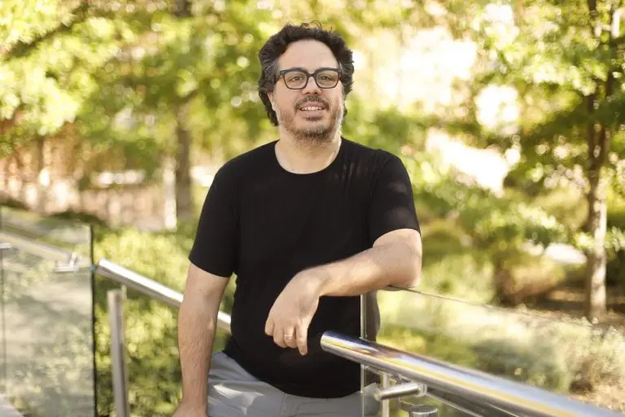
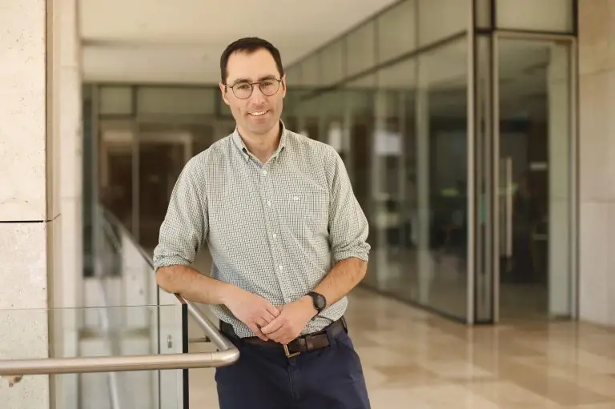

1.- Paradigmas de la programación
Cursé este ramo el 202420, hasta la fecha ha sido el ramo más desafiante que he tenido, y en el que me dí cuenta que la programación es el área que más me iba a costar a lo largo de la carrera.
Profesor

Tengo 23 años, me gusta preparar café en cafeteras de filtrado como la V60, tocar canciones de rock en guitarra eléctrica y salir a caminar por los parques.
Me han enseñado a programar en varios lenguajes de programación, tales como:
Debido a la falta de práctica, no recuerdo mucho sobre como programar en cada lenguaje, espero recordar como programar en JavaScript a lo largo del curso.
Cursé este ramo el 202420, hasta la fecha ha sido el ramo más desafiante que he tenido, y en el que me dí cuenta que la programación es el área que más me iba a costar a lo largo de la carrera.

Cursé este ramo el 202520, si bien considero que Paradigmas fue más complicado, conceptualmente hablando me costó mucho más comprender la programación desde el nivel de los chips de Silicio.
